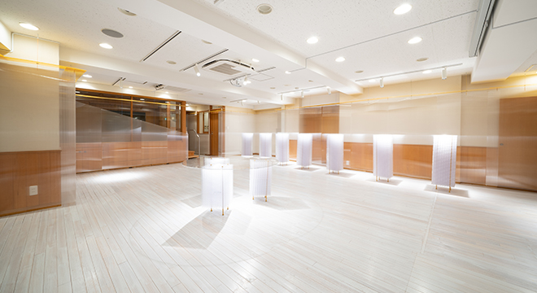

バックオフィスのみなさまへ
人事労務関連SaaSを体験できる
「クラウドステーション」
人事労務関連SaaSを実際に体験・比較できるショールームです。
マネーフォワード・freee人事労務・ジョブカン・
HRMOS • KING OF TIME • SmartHRなど
実際に触って比べていただけます。

SHOWROOMショールームで実体験

ショールムでクラウドサービスを体験できます
協賛企業各社様のデモ環境を取り揃えておりますので、実際に来館して比較していただけます。弊社スタッフからの利用アドバイスも同時にこ案内可能です。タイムカードの各種打刻体験や、アナログ企業の労務業務も再現したコーナーもご用意しております。


このサイトでできること
「CLOUD STATION」とはクラウド勤怠、クラウド給与サービスを中心とした人事労務関連クラウドを体験していただくプロジェクトです。「神楽坂ショールーム」「CLOUD STATION（本サイト）」「ワークショップ」を柱として、中小企業へテクノロジーを届ける、をミッションにしております。
本サイト「CLOUD STATION」では、豊富なコンテンツによるクラウドサービスの比較、検討、ショールームの予約、取り扱いサービスの確認・問い合わせをおこなっていただけます。